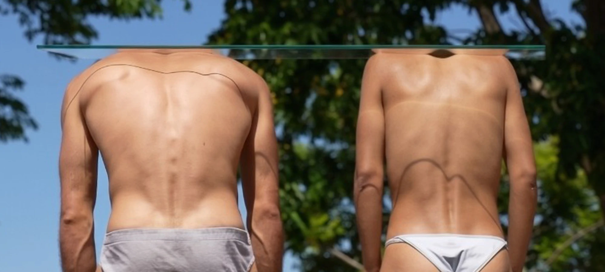
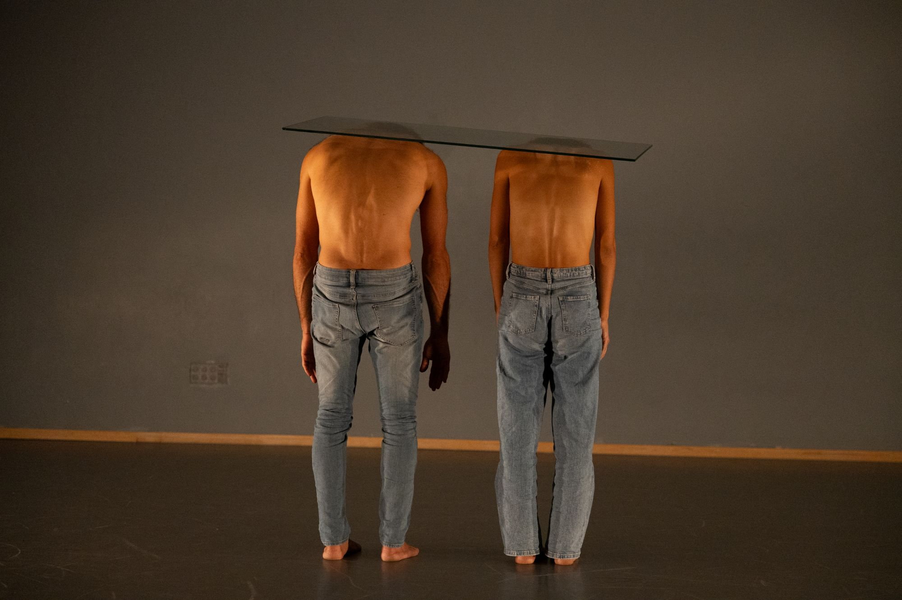
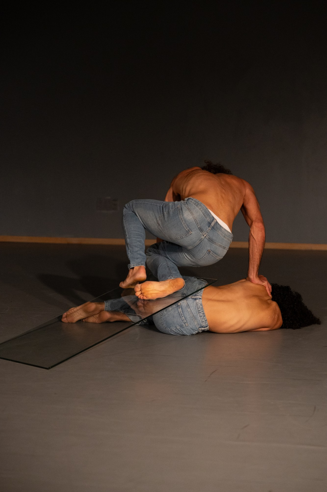
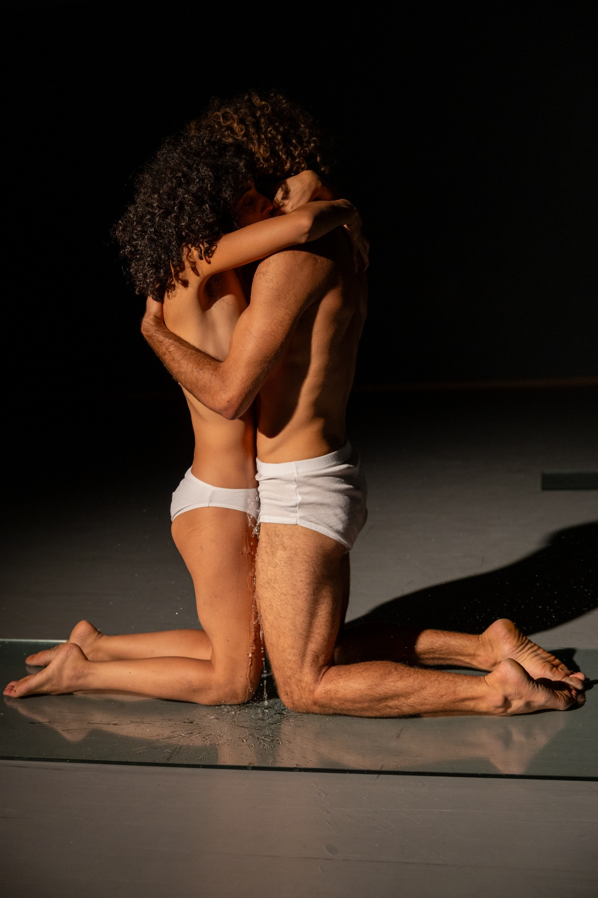
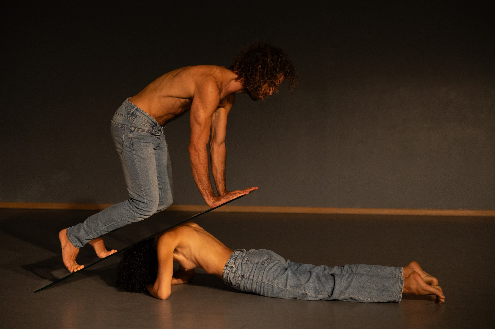
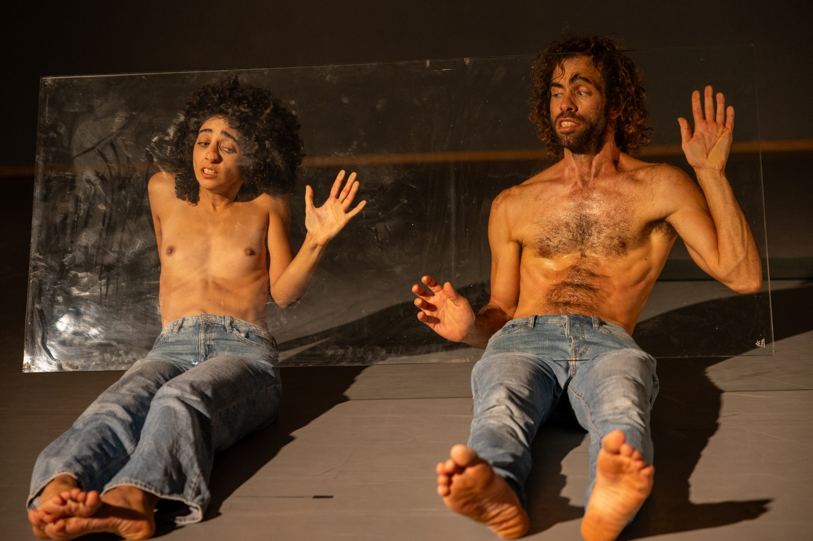
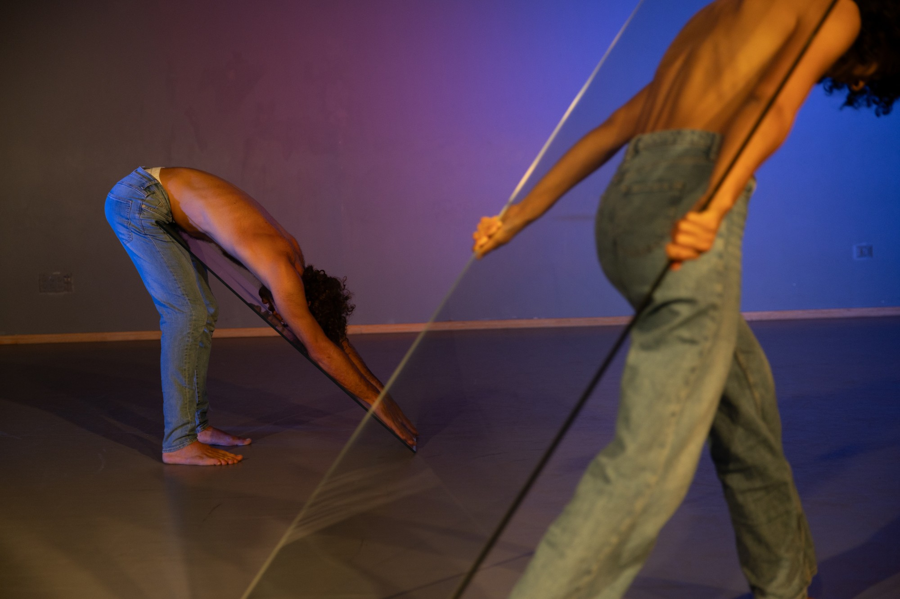
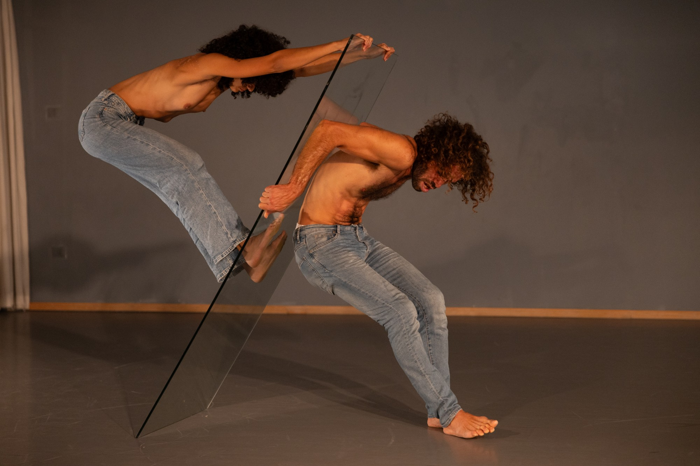

Stage · 2026
Borderline
A duet joined by two panes of real glass — danced along its fracture lines, testing who will break first: him, her, or the glass.

Trailer
A woman and a man in a duet, joined by two panes of glass. They dance in constant search for the glass boundaries, treading along the fracture lines in order to keep it intact, while exploring the limits of danger — who will break first? He, she, or the glass?
Examining to what extent the relationship between the two will be able to hold the tension.
The work is woven with images of this burden that continues to loom over our heads — from the unknown future to the volatile present. Here, the glass evokes these two directions of time through the transparent mass that it is. It also brings forth images related to the growing layer of screening between us, the human family.
Within the work, communication through the glass screen replaces direct communication between body to body. And between the masses of the bodies themselves, another mass enters the conversation: the mass of separation — one that distorts and alters whatever passes through it.
How it is made
Nothing on stage is simulated.
The glass is real and it carries real weight. The dance is not built from movements but from actions — on each other's bodies, on the glass — and every action has a consequence in the real world, not only in the theatre.
The material came out of the rehearsal room, where we genuinely did not know whether the glass would hold. We tested it slowly, over months, until we trusted it. What an audience watches is that process; the choreography is its residue.
Because the actions are real, the emotion is real too. We don't perform a feeling on a director's note — whatever the action produces in us on a given night is what arrives in the room. Some runs turn out funny. Some are very dark.
The structure is fixed. What lives inside it isn't.
Long stretches of the piece are almost silent. The audience stays tense, because the situation is not a representation of danger. It is the situation.
Stills







Credits
Concept, choreography & performance
Talia Barda & Nadav Alba Sharon
Premiere
Habait Theatre, Jaffa — 2026
Sound design
Eldar Baruch
Light design
Nadav Sharon & Talia Barda
Video recording & editing
Omer Messinger
Photography
Yahel Gazit
Stage manager
Noa Bartur
Duration
45 minutes
The piece premiered in July 2026 at Habait Theatre, Jaffa, Israel.